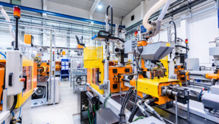

Each industry has its own challenges, and our experienced team of engineers is capable of helping our clients to work through these challenges and come up with the right solutions to address them.
Whether you are a contractor, utility provider, an oil & gas producer, or a manufacturer; we have the right set of expertise to help our clients to optimize their facilities and keep them focused on their production planning & management.
UTILITIES

District Cooling Plant & ETS Automation
Metering & Billing Automation
Water Distribution & Pumping Station Automation
Substation Automation
Water & Waste Water Treatment Automation
Boiler & Combustion Management Automation
OIL&GAS
Fire & Gas Detection
ESD Systems<
Tank Farm & Terminal Automation
Pipeline Automation
Condition Monitoring Applications
MANUFACTURING

Batch Process Automation
Petrochemicals
Aluminum Smelters
Steel Mills
Food & Beverage
Pharmaceuticals
Material Handling